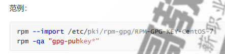
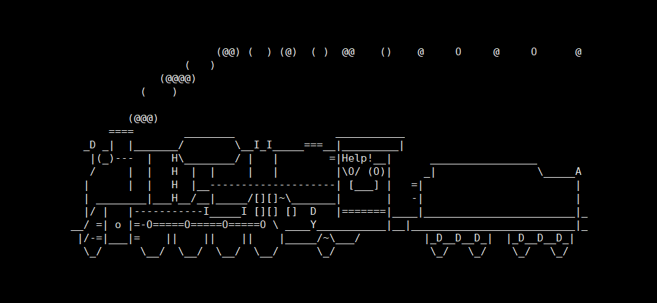

软件管理
1 rpm包管理器
Centos 系统上使用rpm命令管理程序包，存在包依赖问题
功能：
- 安装
- 卸载
- 升级
- 查询
- 校验
- 数据库维护
1.1 安装
格式：
1 | |
选项：
1 | |
常用组合：
1 | |
rpm包安装[install-options]
1 | |
1.2 升级和降级
rpm包升级
1 | |
对应选项：
1 | |
常用组合：
1 | |
1.3 包查询
1 | |
1 | |
常用查询用法：
1 | |
范例：查看最近安装的包
1 | |
1.4 包卸载
格式：
1 | |
1.5 包校验
在安装包时，系统会检查包的来源是否合法
检查包的完整性和签名
1 | |
在检查包的来源和完整性前，必须导入所需要公钥

1.6 数据库维护
rpm包安装时生成的信息，都放在rpm数据库中
1 | |
可以重建数据库
1 | |
2 yum和dnf
Centos 系统上使用yum、dnf，解决了rpm包依赖问题
2.1 yum/dnf工作原理
yum/dnf 是基于C/S模式
- yum 服务器存放rpm包相关包的元数据
- yum客户端访问yum服务器进行安装或查询等
yum实现过程
先在yum服务器上创建yum repository（仓库），在仓库中事先存储了众多rpm包，以及包的相关的元数据文件（放于特定目录repodata下），当yum客户端利用yum/dnf工具进行安装包时，会自动下载repodata中的元数据，查询元数据是否存在相关包以及依赖关系，自动从仓库中找到相关包下载并安装。
2.2 yum客户端配置
yum客户端配置文件
1 | |
帮助参考：man 5 yum.conf
yum服务器的baseurl形式：
1 | |
注意：yum仓库指向的路径一定必须是repodata目录所在目录
相关变量：
1 | |
范例：
1 | |
yum仓库配置脚本：
1 | |
2.3 yum命令
yum命令语法：
1 | |
yum的命令行选项：
1 | |
2.3.1 显示仓库列表
1 | |
范例：
1 | |
范例：显示仓库的详细信息
1 | |
2.3.2 显示程序包
1 | |
范例：只查看已经安装的包
1 | |
范例：查看可以升级的包
1 | |
2.3.3 安装程序包
1 | |
2.3.3.1 安装epel源包
范例：安装epel源
1 | |

2.3.3.2 只下载相关依赖包，而不安装
1 | |
2.3.4 卸载程序包
1 | |
2.3.5 升级和降级
检查可升级：
1 | |
升级和降级
1 | |
2.3.6 查询
查看程序包information
1 | |
查看指定的特性（或者某文件）是由哪个程序包所提供：
1 | |
注意：要写全路径，而不只是文件名，否则有可能无法查询到
2.3.7仓库缓存
清除目录/var/cache/yum缓存
1 | |
构建缓存：
1 | |
2.3.8 查看yum事务历史
yum执行安装卸载命令会记录到相关日志中
日志文件：
1 | |
日志命令
1 | |
范例：
1 | |
2.3.9 安装及升级本地程序包
1 | |
2.3.10 查看包的安全警报
1 | |
2.3.11 包组管理相关命令
1 | |
范例：最小化安装的系统安装图形环境
1 | |
2.3.12 实现私有yum仓库
下载所有yum仓库的相关包和meta数据：
1 | |
创建私有仓库：
1 | |
范例：创建局域网的基础base的私有仓库
1 | |
3 源码编译
3.1 源码编译介绍
程序包编译安装：
源代码–>预处理–>编译–>汇编–>链接–>执行
多文件：文件中的代码之间，很可能存在跨文件依赖关系
虽然有很多开源软件将软件打包，可以直接使用，但并不是所有的源代码都打包了，如果想使用开源软件，可能需要自己下载源码包，进行编译安装。另外即使提供了包，由于生产中需要使用软件的某些特性，仍需要自行编译安装。
3.2开源程序源代码的获取
项目官方自建站点：
apache.org
mariada.org
代码托管：
github.com
gitee.com
SourceForge.net
code.goole.com
3.3 编译源码的项目工具
C、C++的源码编译：使用make项目管理器
configure脚本–>makefile.in–>makefile
相关开发工具：
autoconf：生成configure脚本
automake：生成makefile.in
java的源代码便利：使用maven
3.4 C语言的源代码编译安装过程
利用编译工具，通常只需要三大步骤
- ./configure
- 通过选项传递参数，指定安装路径、启用特性等；执行时会参考用户的指定以及Makefile.in文件生成Makefile
- 检查依赖到的外部文件，如依赖的软件包
- make 根据makefile文件，会检测依赖的环境，进行构建应用程序
- make install 复制文件到相应路径
注意：安装前可以通过查看README，INSTALL获取帮助
3.4.1编译安装准备
准备：安装相关的依赖包
- 开发工具：make，gcc
- 开发环境：开发库（glibc），头文件，可以安装开发包组Development Tools
- 软件相关依赖包
生产实践：基于最小化安装的系统建议安装下面相关包
1 | |
3.4.2 编译安装
第一步：运行configure脚本，生成makefile文件
其选项主要功能：
- 可以指定安装位置
- 指定启用的特性
获取其支持使用的选项
1 | |
选项分类：
安装路径设定
–prefix=/PATH ：指定默认的安装位置，默认为/usr/local
–sysconfdir=/PATH：配置文件安装位置
system types：支持交叉编译
软件特性和相关指定：
Optional Feature ：可选特性
–disable-FEATURE
–enable-FEATURE[=ARG]
Optional Packages：可选包
–with-PackAGE[=ARG] 依赖包
–without-PACKAGE 禁用依赖关系
注意：通常被编译操作依赖的程序包，需要安装此程序包的“开发”组件，其包名一般类似于name-devel-VERSION
第二步：make
第三步：make install
3.4.3 安装后的配置
二进制程序目录导入至PATH环境变量中
编辑文件/etc/profile.d/NAME.sh
1 | |
2.相关用户及文件
有些开源软件编译完成后，还需要创建相关的用户及文件
3.导入帮助手册
编辑/etc/man.config | man_db.conf文件，添加一个MANPATH
3.4.4 编译安装实战案例
3.4.4.1 官网下载并编译安装新版httpd 2.4.57
范例：centos8编译安装httpd-2.4.57
1 | |
范例：httpd一键安装脚本：
1 | |
4 Ubuntu软件管理
Debian软件包通常为预编译的二进制格式扩展名“.deb”,类似rpm文件，因此安装快速无需编译软件。包文件包括特定功能或软件所必需的文件、元数和指令
- dpkg：package manager for debian，类似于rpm。dpkg是基于debian的系统的包管理工具。可以安装，删除和构建软件包，但无法自动下载和安装软件包或其他依赖项
- apt：Advanced Packaging Tool，功能强大的软件包管理工具，甚至可升级整个Ubuntu的系统，基于客户/服务器架构，类似于yum
4.1 APT工作原理
略
4.2 dpkg包管理工具
帮助查看：man dpkg
1 | |
4.3 apt
apt 和apt-get命令对比
| apt命令 | 被取代的命令（即apt-get） | 命令的功能 |
|---|---|---|
| apt install | apt-get install | 安装软件包 |
| apt move | 移除软件包 | |
| apt pruge | 移除软件包及配置文件 | |
| apt update | 刷新存储库索引 | |
| apt upgrade | 升级所有可升级的软件包 | |
| apt autoremove | 自动删除不需要的包 | |
| apt full-upgrade | 在升级软件包时自动处理依赖关系 | |
| apt search | apt-cache search | 搜索应用程序 |
| apt show | apt-cache show | 显示安装细节 |
apt特有命令
1 | |
APT包索引文件
1 | |
4.4 查看仓库中的指定软件的所有版本
1 | |
4.5 Ubuntu 建议安装的常用包
1 | |
本博客所有文章除特别声明外，均采用 CC BY-SA 4.0 协议 ，转载请注明出处！